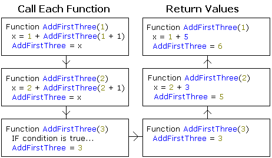

| Some cause happiness wherever they go; others whenever they go. |
|
Article Navigation - Introduction - A Pinch of Style - Applying Recursion |
Recursive Thinking - Teto Ponders the Future of Recursion Robert E. Teto If there was ever a way to fold logic back onto itself, then recursion accomplishes this without question. A recursive function is a normal function that calls itself before reaching its end. These are useful in calculating sums and factorials, whereby an argument is passed to the same function, and the return value is used in the previous function's manipulation. I suddenly realized the other day that this technique could be very useful in coding an update for my graphing calculator, the TGC. For instance, say you had a function called AddFirstThree() that returns the sum of the numbers 1 through 3, and it took an argument representing the first number. During the first call, it is obvious that this number will be 1. Here's a little QBasic snippet... You may be a little confused. Don't worry, most chimps didn't understand it the first time either. Here's a picture that may help you understand it a little better...  Examine that closely. Each time it returns the added portion it adds that to the previous number. You may be wondering what the advantages of recursion are. Wouldn't it be easier to just use a standard loop? Yes, but then you couldn't make a debugger's life a living hell then could you? If you're interested in spicing up your code, then you won't want to miss the next section. |